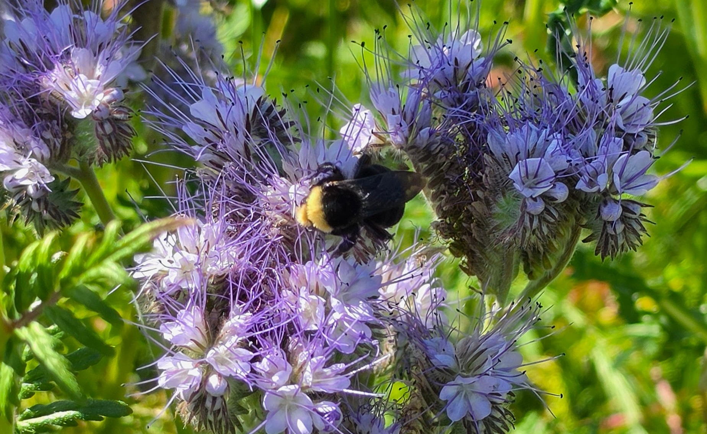

Education
Learn With HoneyTide
Bees are more than honey producers. They are pollinators, ecosystem partners,
and teachers of patience, stewardship, and connection.
Pollinator Education
Understanding Bees Starts with Curiosity
I’m building HoneyTide as a place to learn alongside the bees. This page
gathers practical information about honey bees, native pollinators, swarms,
pollinator-friendly habitat, and the living systems that support our gardens,
farms, food, and communities.
It is designed for curious learners, homeowners, gardeners, future beekeepers,
and anyone who wants to support pollinators in simple, practical ways.

Native pollinators play a vital role in Oregon ecosystems. While HoneyTide
works with honey bees, healthy landscapes support a diversity of pollinators
including bumble bees, mason bees, leafcutter bees, butterflies, moths,
beetles, flies, and many other beneficial insects.
Honey Bees
Honey bees live in large social colonies with a queen, workers, drones,
brood, comb, stored nectar, pollen, and complex seasonal rhythms.
Managed honey bee colonies can support pollination and produce hive
products such as honey and beeswax when colonies are healthy and conditions
allow.
Native Bees
Oregon is home to many native bee species with different nesting habits,
flower relationships, and life cycles. Some live alone, some nest in soil,
and others use hollow stems or natural cavities.
Supporting native bees means supporting habitat, diverse blooms, pesticide
awareness, and a landscape that offers food and shelter throughout the year.
What Is a Swarm?
A honey bee swarm is a natural form of colony reproduction. When a colony
grows strong enough, a queen and a group of workers may leave to search for
a new home.
Swarms may gather temporarily on tree branches, fences, shrubs, or outdoor
structures while scout bees look for a permanent nesting site.
Pollinator Stewardship
Pollinator stewardship is about more than keeping bees. It includes caring
for flowering plants, habitat, soil, water, pesticide awareness, and the
relationship between people and the natural world.
HoneyTide’s goal is to help people see bees not as isolated insects, but as
part of a larger living system.
Camron’s Learning Path
Learning Through OSU and Local Beekeepers
Camron keeps growing his beekeeping knowledge through the OSU Master
Beekeeper Apprentice Program, the OSU Bee Advocate Program, and membership
with the Lane County Beekeepers Association.
OSU Master Beekeeper Apprentice Program
Hands-on honey bee learning, mentorship, and practical hive experience.
OSU Bee Advocate Program
Pollinator education focused on native bees, habitat, and everyday support.
Lane County Beekeepers Association
Local beekeeping community, seasonal knowledge, and Lane County experience.
Camron is grateful for what he learns from these programs and community
resources, but HoneyTide is still his own apiary. It is not run by OSU, OSBA,
Lane County Beekeepers Association, or Oregon Bee Project.
Beginner Learning
Future HoneyTide Classes
As I keep learning and the apiary grows, I hope to offer beginner-friendly
education in the future, including basic beekeeping, swarm awareness,
pollinator stewardship, and practical ways homeowners can support bees.
Future classes will be rooted in curiosity, safety, observation, sustainable
beekeeping, and respect for both bees and the natural world.
Pollinator Support
Simple Ways to Help Pollinators
Plant for Bloom Succession
Choose flowers that bloom across spring, summer, and fall so pollinators
have food throughout the season.
Reduce Pesticide Pressure
Avoid spraying blooming plants and consider lower-impact pest management
practices whenever possible.
Support Native Habitat
Native plants, undisturbed soil, hollow stems, and natural edges can
support many native bee species.
Oregon Learning Resources
Places to Keep Learning
These links are shared as helpful public learning resources for Oregon
beekeeping, swarm awareness, native bees, and pollinator habitat. HoneyTide
learns from many community resources, but it is not run by these groups.
From the Apiary
Learning Season by Season
As HoneyTide grows, I’ll continue adding beginner resources, pollinator
information, swarm awareness, and lessons learned from the apiary.